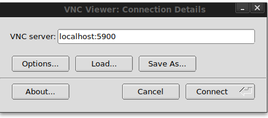
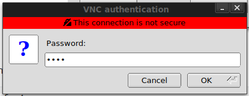

A prebuilt kali-linux with GUI aka vnc in docker in 2 seconds

This guide assumes you already know what is docker and docker, vncviewer installed on your system
The docker image given at https://hub.docker.com/search?q=&type=image is a blank kali image with 0 tools.
Let us create a light-weight custom image with the tools needed. The following are the tools which I think are commonly used in kali you can add/remove a few from that list.
1
2
3
4
5
6
7
8
9
10
11
12
13
14
15
16
17
18
19
20
21
22
23
24
25
26
27
28
29
30
31
32
33
34
35
36
37
38
39
40
41
42
43
44
45
46
47
48
49
50
51
52
53
54
aircrack-ng
crackmapexec
crunch
curl
dirb
dirbuster
dnsenum
dnsrecon
dnsutils
dos2unix
enum4linux
exploitdb
ftp
git
gobuster
hashcat
hping3
hydra
impacket-scripts
john
joomscan
masscan
metasploit-framework
mimikatz
nasm
ncat
netcat-traditional
nikto
nmap
patator
php
powersploit
proxychains
python-pip
python2
python3
recon-ng
responder
samba
samdump2
smbclient
smbmap
snmp
socat
sqlmap
sslscan
theharvester
vim
wafw00f
weevely
wfuzz
whois
wordlists
wpscan
Creating Dockerfile
The default password set for the VNC is 1234
1
2
3
4
5
6
7
8
9
10
11
12
13
14
15
16
17
18
19
20
21
22
23
24
25
26
27
28
29
# Dockerfile kali-light
# Official base image
FROM kalilinux/kali-rolling
# Apt
RUN apt -y update && apt -y upgrade && apt -y autoremove && apt clean
# Tools
RUN apt install aircrack-ng crackmapexec crunch curl dirb dirbuster dnsenum dnsrecon dnsutils dos2unix enum4linux exploitdb ftp git gobuster hashcat hping3 hydra impacket-scripts john joomscan masscan metasploit-framework mimikatz nasm ncat netcat-traditional nikto nmap patator php powersploit proxychains python-pip python2 python3 recon-ng responder samba samdump2 smbclient smbmap snmp socat sqlmap sslscan theharvester vim wafw00f weevely wfuzz whois wordlists wpscan -y --no-install-recommends
# DE and vncserver
RUN DEBIAN_FRONTEND=noninteractive apt install -y xfce4 xfce4-goodies x11vnc xvfb
RUN mkdir ~/.vnc
RUN x11vnc -storepasswd 1234 ~/.vnc/passwd
COPY entrypoint.sh /entrypoint.sh
ENTRYPOINT ["/entrypoint.sh"]
# Alias
RUN echo "alias l='ls -al'" >> /root/.bashrc
RUN echo "alias nse='ls /usr/share/nmap/scripts | grep '" >> /root/.bashrc
RUN echo "alias scan-range='nmap -T5 -n -sn'" >> /root/.bashrc
RUN echo "alias http-server='python3 -m http.server 8080'" >> /root/.bashrc
RUN echo "alias php-server='php -S 127.0.0.1:8080 -t .'" >> /root/.bashrc
RUN echo "alias ftp-server='python -m pyftpdlib -u \"admin\" -P \"S3cur3d_Ftp_3rv3r\" -p 2121'" >> /root/.bashrc
# Set working directory to /root
WORKDIR /root
Build your new Image
You can now create the image with command :
docker build -t mykali-light .
Creating the Host Data Volume
We need to create a shared directory to share data in the container. So whatever we paste inside ~/container-data will be available inside /root/data inside docker container.
1
mkdir ~/container-data
Running docker container
1
docker run -p 5900:5900 --rm -i -t -v ~/container-data:/root/data/ mykali-light
Connect with VNC on the host machine


Inside the white console start xfce4 session
1
startxfce4


 Never miss a story from us, subscribe to our newsletter
Never miss a story from us, subscribe to our newsletter